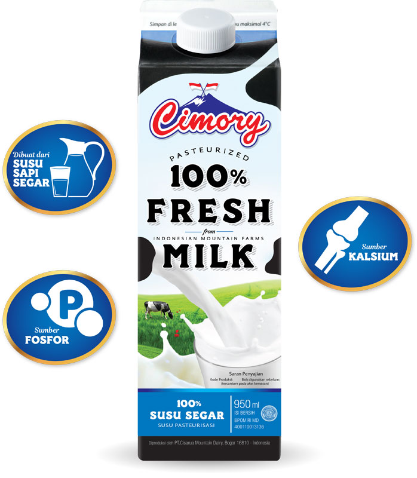
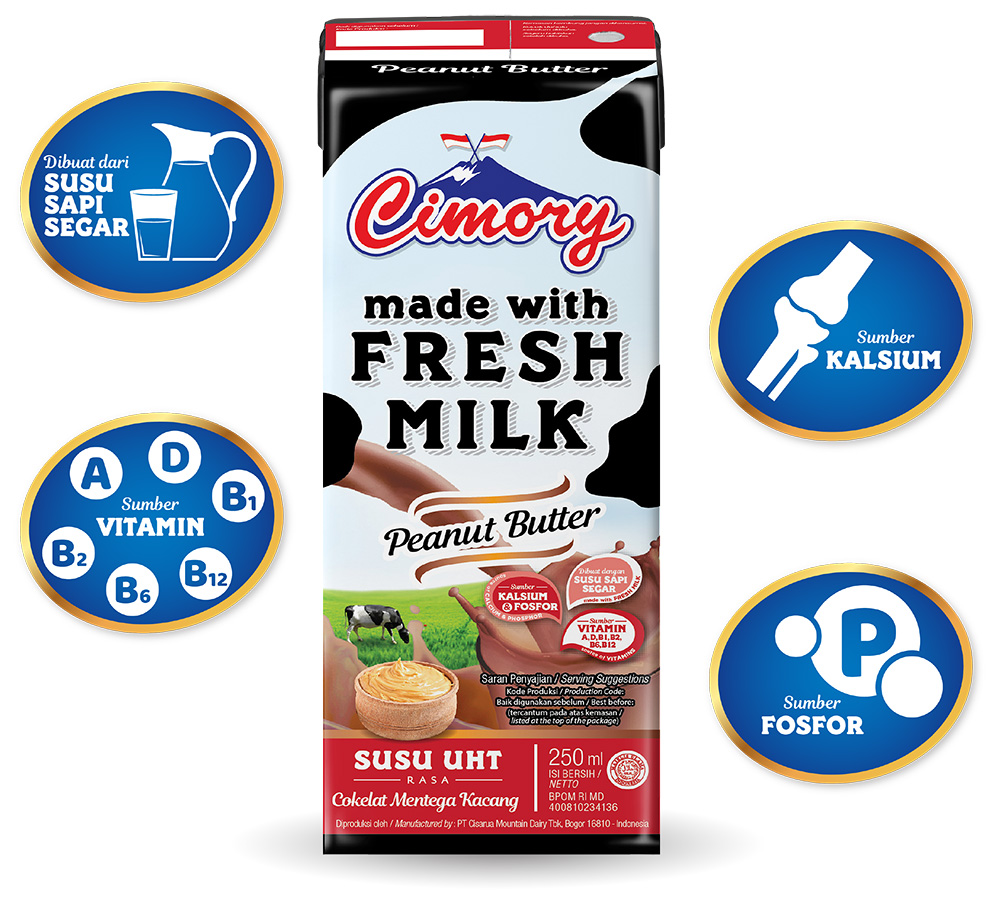
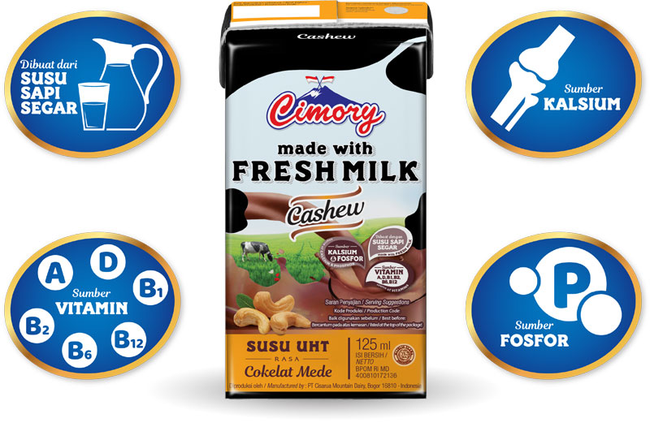
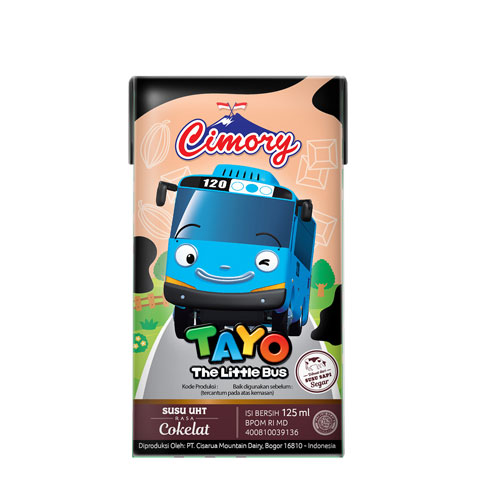
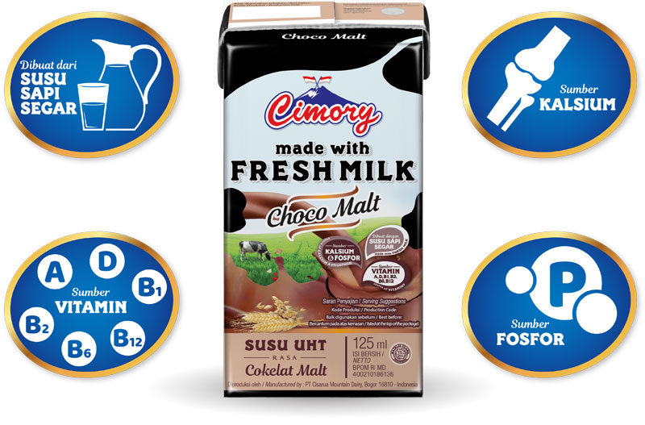
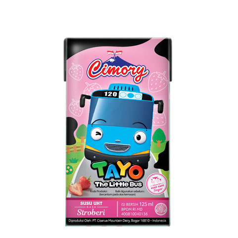
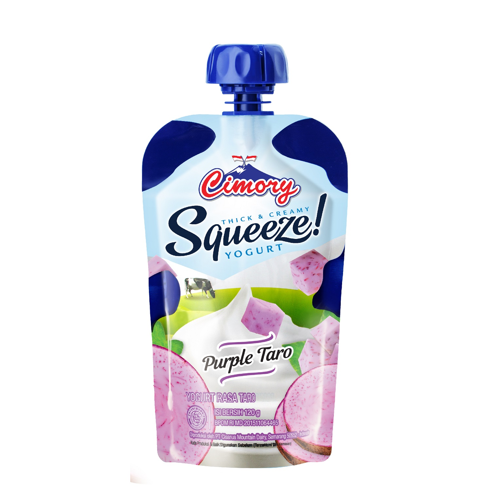
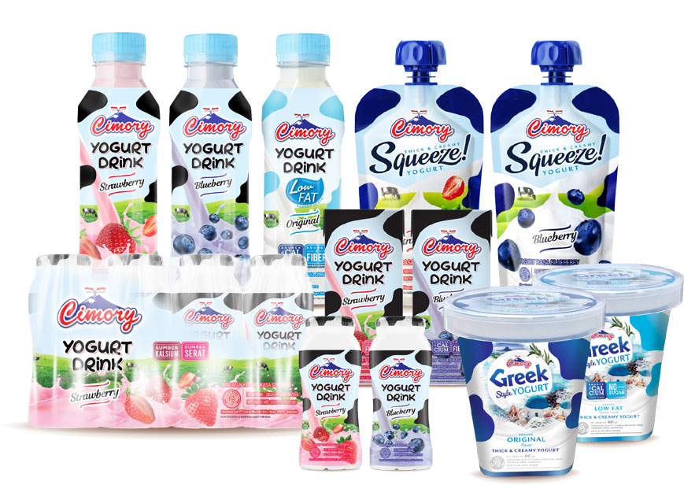

Dibuat
untuk Kesegaran,
Dirancang untuk kehidupan.
Cimory Fresh Milk dibuat dari susu sapi segar yang berasal dari pegunungan Puncak, Jawa Barat yang menggunakan teknologi sterilisasi (pasteurisasi). Susu Cimory memiliki rasa yang creamy, ciri khas susu sapi segar dan mengandung nutrisi berkualitas tinggi seperti protein, vitamin dan mineral. Memenuhi kebutuhan kalsium harian keluarga.
Explore the Taste↗

Dirancang untuk
Kemurnian rasa kacang
Cimory UHT Milk Peanut Butter! Susu rasa inovatif ini secara harmonis memadukan esensi selai kacang yang kaya rasa dengan susu yang creamy
Rasa yang menyegarkan
Di setiap tegukan Cashew
Cimory UHT Milk 125 ml rasa Cashew

Cashew
$5

Chocolate
$5

Chocomalt
$5

Strawberry
$5

Desain minimalis
Nutrisinya maksimal
Cimory Yogurt Squeeze 120gr, Praktis, sehat, dengan protein dan kalsium untuk pencernaan
All Varian
Yougurt
Cimory Yogurt terbuat dari susu segar pilihan terbaik yang difermentasi dengan bakteri baik dan diperkaya dengan buah segar. Cimory Yogurt mengandung protein, kalsium dan serat yang menjaga kesehatan pencernaan, baik untuk pertumbuhan dan kekebalan tubuh. Cimory Yogurt memiliki berbagai banyak pilihan rasa menarik.
